AI citation results across twelve domains, plus websites, ad accounts, content and link work. 15+ websites built, 13+ ad accounts across Google, Meta, Instagram and TikTok, 100+ articles. Filter by the kind of work; anything with a live link opens in a new tab.
Backlinks2021–26
Guest Posting
Education, property, fashion, food and fragrance clients
Links that came from a pitch rather than a signup form. Each one sat behind an editor who had to agree the piece was worth publishing, which is what separates these from everything else on this page.
Placement was chosen on topic fit, not on DA. A CPA course guide belongs on an accounting site and a data science piece belongs on a university domain. A higher-authority blog with no subject overlap is worth less than a smaller one in the right context.
Measured against a February 2024 baseline, every citation on this domain was gained in the window. Google AI Overviews 22.8K across 7.9K pages, Perplexity 16.8K across 10.4K pages, ChatGPT 5.6K, Copilot 5.3K, Gemini 625. The page counts are the real signal here: Perplexity is pulling from 10,400 separate URLs, so this is site-wide structure doing the work rather than a handful of strong articles. The link profile was rebuilt over the same period, from a few dozen referring domains up to 746.
Rich Results Test reads Organization, LocalBusiness, BreadcrumbList and WebSite off the page, each with 0 errors and 0 warnings. Zero warnings is the harder half. Errors mean the markup is broken; warnings mean Google parsed it but recommended properties are missing, and most JSON-LD in the wild sits in that second bucket, technically valid and half-populated.
The four types are chosen, not sprinkled. Organization and LocalBusiness establish the entity and its physical presence, BreadcrumbList gives Google the hierarchy the URL path does not, and WebSite carries the search action and site name. They cross-reference through @id so the entity graph resolves as one thing rather than four disconnected blocks. That matters twice over now: it is what earns rich results in classic search, and it is the same structured data answer engines read when they decide which source to name. The AEO work on this domain and this markup are the same job.
10.82x blended return across both placements. Spend of €190,236 returned €1,535,393 in tracked revenue, at €0.35 a click and a €2.47 CPM with a 0.71% CTR. Cheap traffic at that volume only pays back if the catalogue feed, the pixel and the purchase event are all clean, so most of the work was upstream of the ad account.
A second account in the same period ran the same structure on a smaller budget: £4.68K spend, 757K impressions, 314K reach, 22.4K link clicks at £0.21 each, and £151.78K in website purchase value. That one closed at 32.40x with a £37.17 cost per purchase.
10.82xreturn on ad spend
€1.53Mattributed revenue
€190Kspend managed
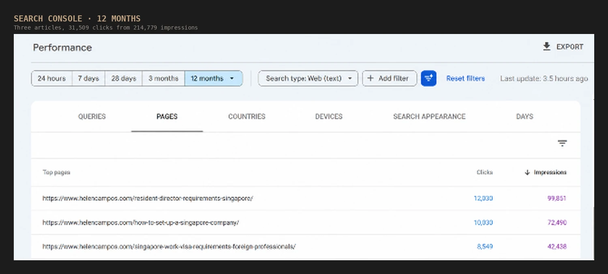
Content12 months
31.5K clicks a year from three Singapore incorporation guides
helencampos.com · corporate services, Singapore
Three articles carrying 31,509 clicks off 214,779 impressions in twelve months. All three answer a question someone asks while they are already forming a company: what a resident director has to be, how the incorporation itself works, and what a foreign professional needs for a work pass.
That is the point of picking these topics. Nobody reads a resident director requirements page casually. A 14.7% overall click-through rate on 12-month data says the titles are matching intent rather than winning impressions on loose terms. At a conservative 2.5% enquiry rate for a service page with this intent, the three pieces are worth roughly 780 enquiries a year to the firm.
A visa platform where the search bar is the product
visa4.com · travel documentation
Everything above the fold answers one question: can I get this visa and when. The destination search sits before any marketing copy, the headline swaps the country name per page, and each card in the trending grid carries a real issue date rather than a generic call to action.
Node on the back end because the country pages are generated from live processing data, not written by hand. Approval rate and turnaround are the two things a nervous applicant checks first, so both are stated in the first screen instead of buried on a pricing page.
Contributed articles on independent publisher sites
Long-form contributions placed on editorial sites that take outside writers. Lower barrier than a guest post on a brand domain, higher than anything self-published, and each piece still had to be written to the host's brief.
Everytoolfy at DA 15 is in the list because the page ranks for the term it targets. Authority alone is not the filter.
Google AI Overviews account for 59.8K of them on their own, up 26K over the quarter and spread across 4.3K pages. ChatGPT (6.2K), Gemini (4K) and Copilot (635) all went from nothing to those numbers in the same window, and Perplexity added 2.9K. At this scale the work stops being page-by-page and becomes template and schema changes applied across thousands of URLs at once.
Client site · Screaming Frog, crawl analysis complete
Full crawl of 276 URLs with post-crawl analysis run: 0 exact duplicates, 2 near duplicates at 0.72%, 2 low-content pages. On a catalogue site that ratio is the finish line rather than the starting point. Most ecommerce crawls come back with faceted variants, paginated series and boilerplate-heavy category pages stacking up in the exact-duplicate bucket.
Near duplicates are the ones actually worth chasing. Screaming Frog scores them on content similarity rather than a byte-for-byte hash match, so they surface the pages a canonical tag will not rescue: two category descriptions reworded around the same terms, or product pages where the only genuinely unique text is the title. Each one gets the same decision: consolidate behind a single canonical with a 301, or give the page enough distinct content to earn its own place in the index. The two flagged here are the shortlist that decision runs against.
276urls crawled
0exact duplicates
0.72%near duplicates
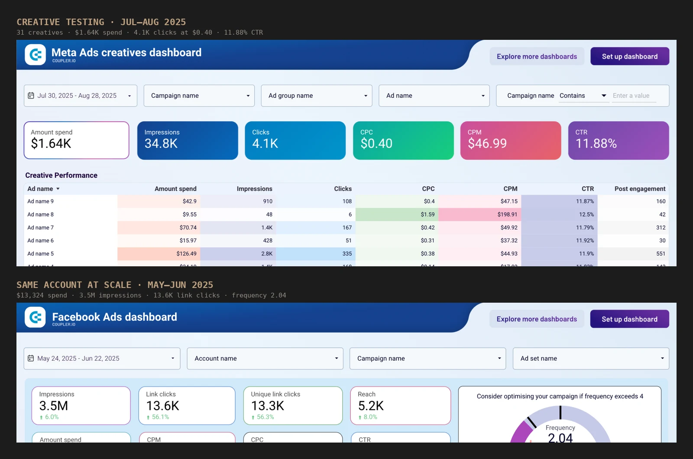
Meta Ads2025
31 creatives tested to an 11.88% click-through rate
Creative testing · Facebook and Instagram
$1.64K across 31 creatives in four weeks: 34.8K impressions, 4.1K clicks, $0.40 a click. An 11.88% CTR on paid social is not a creative that got lucky, it is the surviving one out of thirty-one after the losers were cut on a fixed spend threshold rather than on opinion.
The same account at scale looks different and should. A month-long flight at $13,324 delivered 3.5M impressions and 13.6K link clicks at a $3.79 CPM, 0.39% CTR and 2.04 frequency, which is the point at which the audience is seeing it twice and the next dollar buys repetition rather than reach. That number is the signal to refresh, and it is why the creative pipeline runs continuously instead of per campaign.
11.88%best creative CTR
3.5Mimpressions delivered
$0.40cost per click
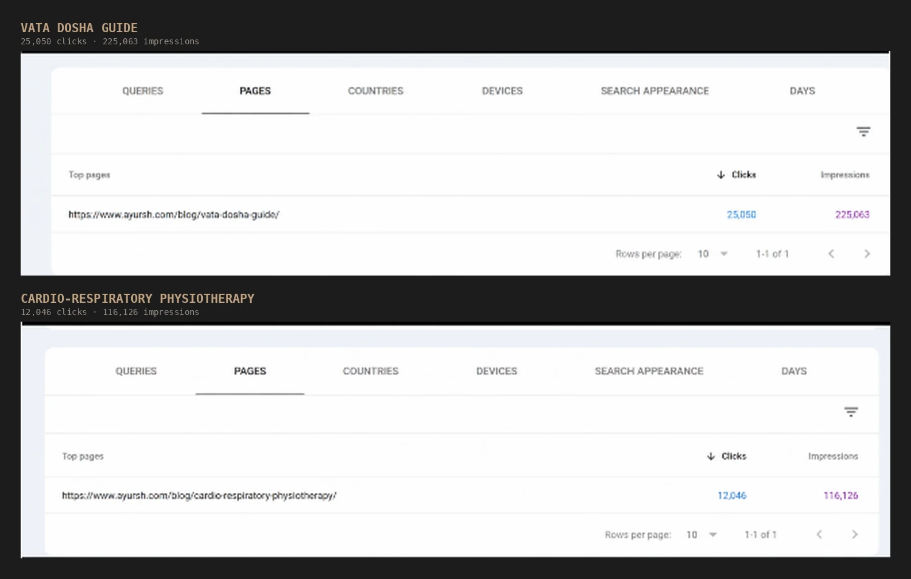
Content2025–26
37K clicks from two health guides
ayursh.com · Ayurveda and physiotherapy
A vata dosha guide at 25,050 clicks from 225,063 impressions, and a cardio-respiratory physiotherapy piece at 12,046 clicks from 116,126 impressions. Together 37,096 clicks off 341,189 impressions, both holding around an 11% click-through rate.
Health content is read before anyone is ready to book, so the honest read is different here. These pages build the audience rather than close it. At a 1% booking or enquiry rate, typical for top-of-funnel health reading, that is roughly 370 enquiries, and the bigger value is 341K impressions of brand exposure to people who will need a practitioner eventually.
Making an algorithmic trading product feel approachable
solidbot.net · crypto trading bots
Trading bot sites usually open with charts and jargon, which filters out everyone who is not already a trader. This one opens with a character who introduces himself, then states the three things a buyer actually weighs up: cost, uptime and flexibility.
WordPress with WooCommerce behind it, so bots are sold as products with a cart and an account area rather than through an enquiry form. Dark theme throughout, because the product is used at a screen late at night and the brand should look like the tool.
Posts placed on running blogs where the audience already exists. The Medium piece on cellular skin protection was written for a Korean skincare OEM and targets the search language buyers actually use when sourcing a manufacturer.
This is the clearest case I have for treating AI search as separate work. The site pulls about 1.2K organic visits a month and ranks for 498 keywords, which is small. Assistants still cite it 419 times across five engines and 290 distinct pages: Perplexity 166, ChatGPT 103, Copilot 96, AI Overviews 32, Gemini 22. Being quotable and being ranked are not the same job, and this domain is proof of it.
On the left, the document is wider than the viewport, so Chrome renders the entire site into roughly two thirds of the screen with a horizontal scrollbar underneath and body copy too small to read without pinching. On the right, the same page reflows to device width, type is legible at default zoom, and the buttons are large enough to hit with a thumb.
Under mobile-first indexing this is not a cosmetic problem. Googlebot crawls and renders at a mobile viewport, so the overflowing version is the one that gets indexed and scored, layout shift and unusable tap targets included. The fixes were the usual suspects: a correct <meta name="viewport" content="width=device-width, initial-scale=1">, fixed pixel widths on containers replaced with fluid units and max-width, img { max-width: 100% } so media stops forcing the page open, and an overflow audit to find the one element pushing the document past 100vw. That last step is the one people skip, and it is usually where the real culprit is hiding.
67% → 100%usable screen width
0horizontal overflow
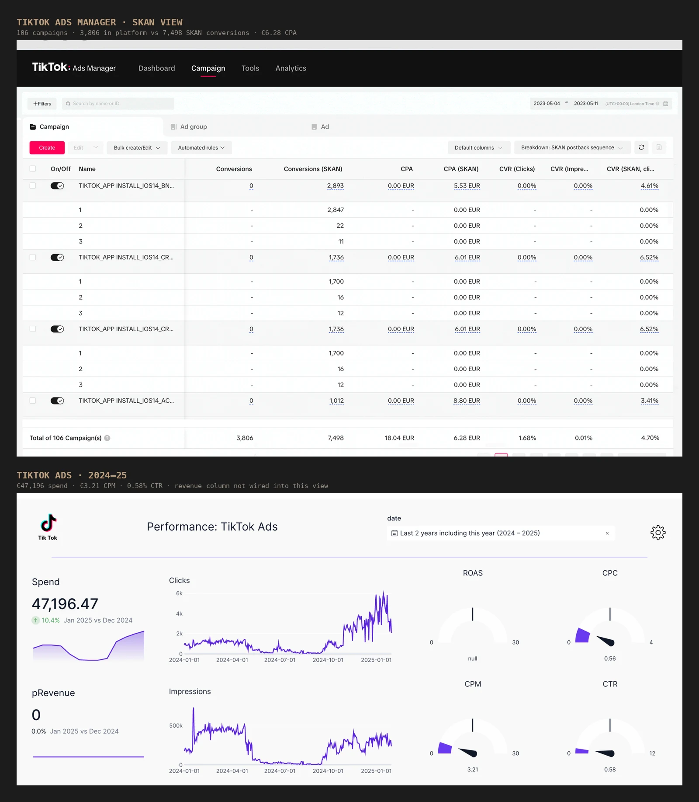
TikTok Ads2023–25
106 TikTok campaigns and a CPA cut to €6.28
Ecommerce · TikTok Ads Manager
3,806 in-platform conversions at a €18.04 CPA, against 7,498 SKAN-attributed conversions at €6.28. The gap between those two numbers is iOS attribution, not a reporting error, and reading only the first one would have shut down campaigns that were actually profitable. Budget decisions were made on the SKAN view with the in-platform figure kept as the floor.
A later flight put €47,196 through the same account at a €3.21 CPM and 0.58% CTR. That view reports a null ROAS because the revenue column in the reporting layer was pointed at a broken field, not because the campaigns failed. The dashboard throws a column reference error underneath the chart. Rewiring it is the open item, and I would rather leave the gap visible than crop the panel above it.
106campaigns run
11.3Kconversions tracked
€6.28CPA on SKAN
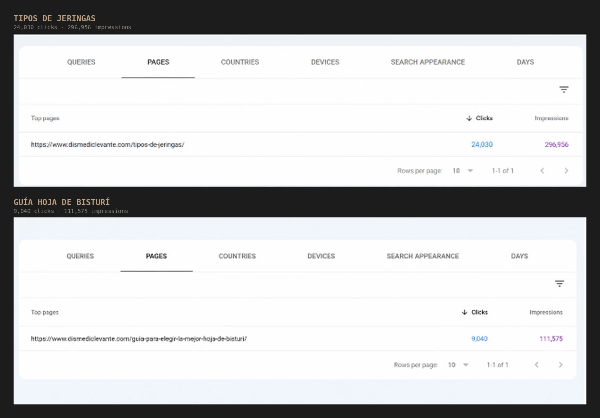
Content2025–26
33K clicks in Spanish for a medical supplies store
dismediclevante.com · medical supplies, Spain
Two buying guides written in Spanish for a market I do not speak the language of, which meant the keyword and intent research had to carry the brief. Tipos de jeringas pulled 24,030 clicks from 296,956 impressions; the scalpel blade guide added 9,040 clicks from 111,575.
Both sit directly above a product category. Someone reading which syringe type to use or how to choose a scalpel blade is one step from adding to cart, which is why guides like these get built next to the catalogue rather than on a separate blog. At a 1.5% ecommerce conversion rate that is around 495 orders from these two pages.
nextlevel.edu.lk · study abroad consultancy, Sri Lanka
A student arrives knowing the country they want, not the agency they want. So the hero asks where am I going and hands them a course finder, and the phone number sits in the header because a large share of enquiries in this market come by call, not form.
Built in Next.js for speed on Sri Lankan mobile connections, with the country and branch menus structured so each destination and each office gets its own indexable page. WhatsApp floats on every screen for the same reason the phone number does.
The strongest links in the profile. Business Standard and YourStory both ran founder stories on Earthy Tales, and CBNME covered Union Square House recording AED 4.9bn in property sales. Those are editorial decisions made by a newsroom, not placements bought by the month.
One caveat so the list reads straight: the WhatsApp entry is a brand story page on a DA 99 domain, not press coverage. It belongs in the profile, just not in the same tier as the other four.
Blooprint Academy · blooprintacademy.in · Education
Every one of these is new: Perplexity 530, Google AI Overviews 432, ChatGPT 407, each starting the year at nothing. The spread is what makes it healthy rather than lucky, with 369 pages cited in Perplexity, 382 in ChatGPT and 268 in AI Overviews. Underneath it sits 935K organic keywords and 1.9M monthly organic traffic. Gemini tracking was not live for this domain at the time of the snapshot.
Shopify's default product grid links every product through product.url | within: collection. That filter rewrites the href to /collections/{handle}/products/{handle}, so a product sitting in six collections becomes reachable on seven separate URLs. The canonical tag still points home to /products/{handle}, which is the worst of both worlds: every internal link on the store points at a URL the site itself says is not the real one.
What that costs is crawl budget burned on faceted duplicates, internal link equity split across variants of the same page, and a Coverage report filling up with Alternate page with proper canonical tag and Duplicate, Google chose a different canonical. Removing the filter in product-grid-item.liquid and the same pattern in the collection, search and related-product templates collapses every crawl path back to one URL per product. Collection context then lives where it belongs, in BreadcrumbList schema and internal linking, instead of in the path. Worth auditing hard-coded collection links and analytics path segmentation before shipping, because the old URLs keep resolving.
1:1product to url
1liquid filter
0duplicate crawl paths
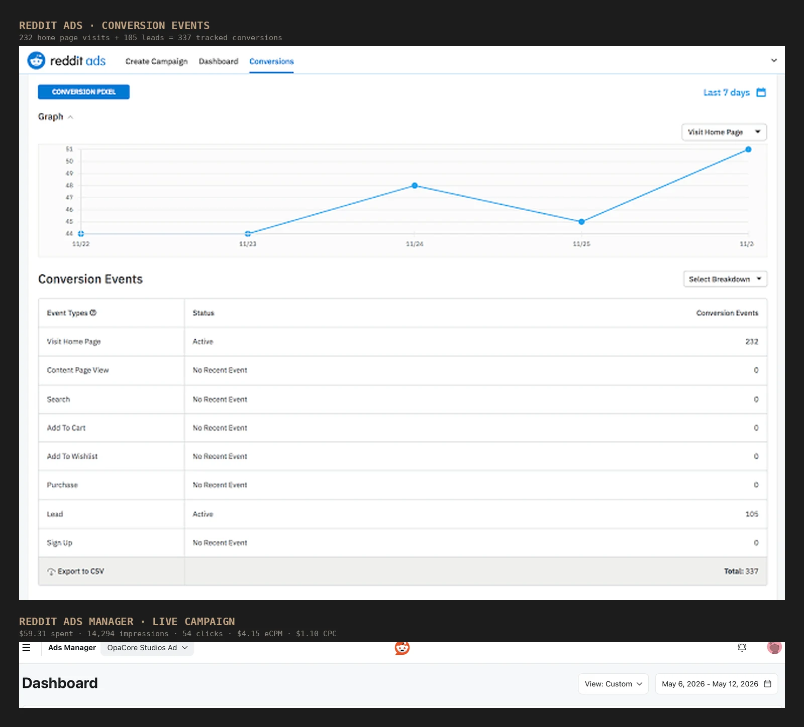
Reddit Ads2025–26
105 qualified leads out of 337 Reddit conversions
B2B lead generation · Reddit Ads
232 home page visits and 105 lead-form completions, tracked as separate conversion actions so the top of the funnel could not be counted as demand. A 31% lead rate from landing page to form is high for cold social, which is what subreddit-level targeting buys you when the offer matches what the community is already arguing about.
Reddit rewards the ad that reads like a comment. Creative was written per subreddit rather than adapted from the Meta set, and campaigns that drifted into generic B2B copy were pulled early.
105leads captured
337total conversions
31%visit to lead rate
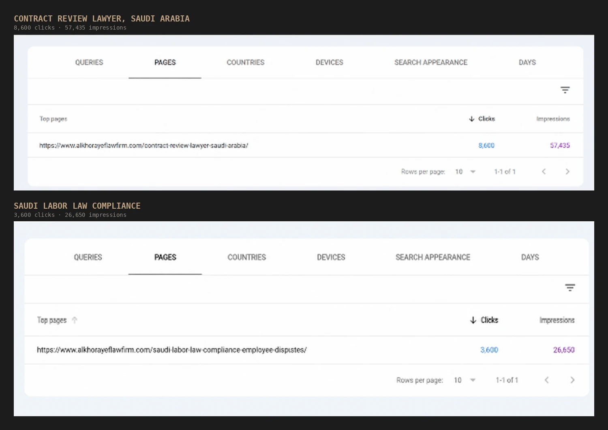
Content2025–26
12.2K clicks of legal search intent in Saudi Arabia
alkhorayeflawfirm.com · law firm, Saudi Arabia
A contract review page at 8,600 clicks from 57,435 impressions and a labour law compliance piece at 3,600 clicks from 26,650. Roughly 14.5% click-through across both, which is what happens when the page title matches the exact problem the searcher typed.
Legal is the highest-value intent on this page. Somebody searching for a contract review lawyer has a contract in front of them. At a 3% consultation request rate these two pages are worth around 365 enquiries, and a single retained commercial client covers the cost of the content programme several times over.
An IT agency selling into the UAE is competing against a lot of stock-photo websites, so the hero is a real room with real people in it and the legal entity name is stated above the headline. Buyers in this market check whether a company is registered before they check what it does.
The navigation floats as a pill over the image and the conversation tab stays pinned to the edge of the viewport, so the contact route never scrolls away. WordPress, because the client manages their own blog and service pages after handover.
Brand profiles across review, funding and creator platforms
Claimed and verified brand profiles. The job here is not link equity, it is owning the first page of results for the company name so a buyer searching the brand finds the brand rather than a competitor's comparison page.
Trustpilot and Glassdoor matter beyond SEO. Both surface in AI answers when someone asks whether a company is worth dealing with or working for.
ChatGPT 639, Perplexity 259 and Google AI Overviews 155 all cite a single page. Gemini is the only engine pulling from more than one, with 53 citations across 13 pages. A thousand citations resting on one URL says the page is genuinely useful to answer engines, and it is also the reason to copy that structure across the rest of the site before anything shifts.
Six issues on arrival, every one of them serious: Hacked – URL injection, malware, harmful downloads, uncommon downloads, deceptive pages and unclear mobile billing. While those flags are live, Chrome puts a full-page red interstitial in front of the domain. Traffic does not dip in that situation, it stops, and rankings follow it down.
The order of work matters more than the work itself. Find the injection vector first, because cleaning files before closing the hole just means it all comes back on the next crawl. Then strip the injected files and database entries, kill the cloaked pages serving one thing to Googlebot and another to users, and get the attacker-generated URLs out of the index rather than leaving them to 404 quietly. Patch what let them in, rotate credentials and keys, tighten file permissions, rebuild a clean sitemap, and only then submit Request Review. Search Console now reads No issues detected.
6 → 0security issues
Passedgoogle review
0chrome warnings
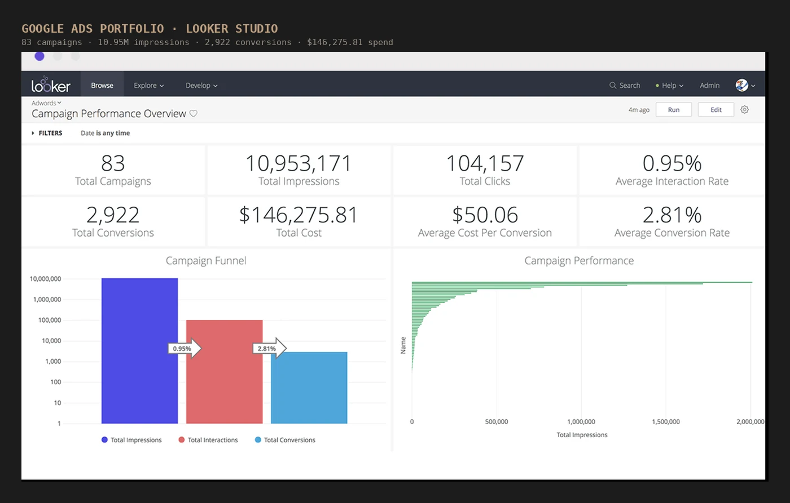
Google Ads2022–25
$146K spend, 2,922 conversions, 83 campaigns
Portfolio view · Looker Studio
Rolled up across accounts: 10.95M impressions, 104,157 clicks, 2,922 conversions at $50.06 each and a 2.81% conversion rate on $146,275 of managed spend.
Eighty-three campaigns is more than anyone can watch by hand, so the reporting layer does the watching. Spend, conversions and cost per conversion pull into Looker Studio nightly, and the only accounts that get opened on a given morning are the ones where cost per conversion moved outside its band. Everything else is left alone, which is usually the harder discipline.
$146Kspend managed
2,922conversions
$50.06cost per conversion
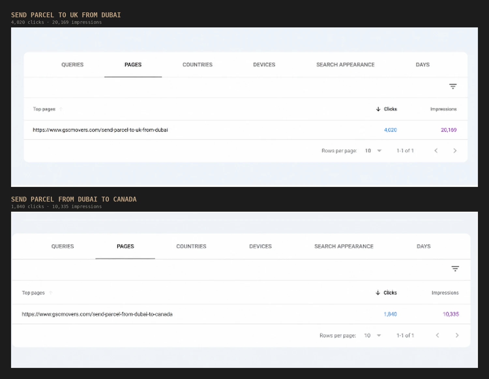
Content2025–26
Route pages that turn a search into a quote request
gscmovers.com · parcel and freight, Dubai
One page per shipping corridor. Dubai to UK at 4,020 clicks from 20,169 impressions, Dubai to Canada at 1,840 from 10,335. Both run near a 19% click-through rate, the highest on this page, because the query and the page title are the same sentence.
Route pages are the cheapest scalable win in logistics content. Every corridor the company serves is its own search term with its own competitors, and the template is repeatable. At a 3% quote request rate these two are worth about 175 enquiries, and there are a dozen more corridors that have not been built yet.
Nobody buys a pallet of frozen poultry from a checkout, so the header button says Request Quote and the hero button says Explore Products. Two different visitors, two different next steps, neither of them a cart.
Quality and Compliance sits in the main navigation rather than in a footer. For an importer or a hotel group the certification page is the page that decides the deal, so it is one click from anywhere on the site.
Directory and local citations across India, UK, UAE and US
Citations built for name, address and phone consistency. The value is not the link, it is that every listing says the same thing, because inconsistent NAP data is one of the quieter reasons a local pack ranking refuses to move.
Fragrantica is the outlier worth pointing at. It is a DA 70 designer page on the reference site the perfume audience actually reads, so it pulls qualified traffic rather than just a citation.
A smaller site by every traditional measure: DR 57, 3.4K organic keywords, 4.8K monthly organic traffic. Perplexity still cites it 389 times across 84 pages, Copilot 246 across 95, Gemini 95 across 92. Around ninety pages per engine on a site this size means the citations sit across the catalogue rather than on the homepage, which is the pattern worth having before you scale anything up. Organic traffic is up 1.2K and traffic value up $294 over the period.
100 across all four Lighthouse categories, on mobile
Client tool page · PageSpeed Insights
Performance, Accessibility, Best Practices and SEO all at 100, measured on the mobile run rather than desktop. Desktop hundreds are not rare; mobile is throttled to a slower CPU and connection, and it is the run that reflects how Google actually evaluates the page.
The field metrics are what make the score honest. Largest Contentful Paint 1.4s and First Contentful Paint 1.2s, both well inside Google's good threshold. Total Blocking Time 0ms, so nothing on the main thread runs long enough to block input. Cumulative Layout Shift 0, so nothing moves after first paint. Speed Index 1.9s, Time to Interactive 1.2s. Getting TBT and CLS to literal zero on a throttled mobile run means deferred and split JavaScript, explicit dimensions on every image and embed, fonts preloaded with a swap descriptor, and critical CSS inlined so the first render never waits on a stylesheet.
100all four categories
0 mstotal blocking time
1.4 slargest contentful paint
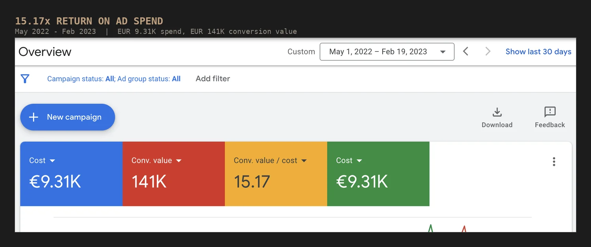
Google Ads2022–23
€141K conversion value on €9.31K spend
Client account · Google Ads
15.17x return over ten months. The number that matters underneath it is the shape of the line: cost stays flat through the middle of the period while conversion value climbs, which is what happens when budget moves onto the terms that already convert instead of the account simply being given more money.
Getting there is unglamorous. Search terms reviewed weekly and negatives added before spend leaks, ad groups tightened so each one answers a single intent, bidding moved to value-based once conversion tracking is trustworthy, and anything that cannot be attributed switched off rather than defended.
15.17xreturn on ad spend
€141Kconversion value
€9.31Kspend
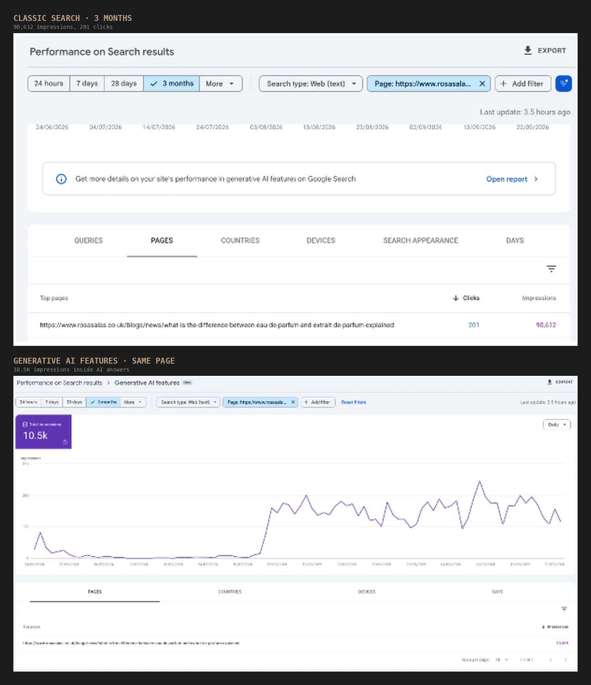
Content3 months
90K impressions and 10.5K of them inside AI answers
rosasalas.co.uk · fragrance retail, UK
An explainer on the difference between eau de parfum and extrait de parfum. 90,612 impressions in three months, and 10.5K of those came from Google’s generative AI features, with the AI curve climbing from nothing in mid-August.
The clicks are 201, a 0.22% click-through rate, and I am not going to dress that up. This is a definitional question that an AI overview answers on the results page, so the reader never needs to arrive. What the page is actually earning is citation and brand presence at the moment somebody is deciding what to buy. That is a real outcome for a fragrance retailer and a bad one to measure on clicks alone, which is exactly the shift AEO work has to account for.
acefuture.co · commercial kitchen design and supply
This is a business that wins work by showing completed kitchens, so Projects is a top-level menu item and the homepage opens on video rather than a static image. A restaurant group wants to see the scale of the last job before it reads a single line of copy.
Services and Industries are separate menus on purpose. One buyer searches by what they need built, the other searches by whether the company has worked in hotels or hospitals before, and both routes had to exist without duplicating pages.
Self-published properties on Blogspot, WordPress.com, Google Sites and LiveJournal. These are owned assets, not earned links, and they are useful for one narrow thing: giving syndicated content a home that indexes fast and can point at the money page.
Read the DA carefully. A DA 100 Blogspot post is a DA 100 host carrying a brand new URL with none of that authority yet. Anyone quoting the host number as the link's strength is selling something.
610 of the site's 661 citations come from ChatGPT, off two pages. Google AI Overviews manage 38, Perplexity 11, Gemini 2, Copilot none at all. When one engine accounts for 92% of a brand's visibility that is a dependency rather than a win, and the fix is different structure per engine instead of more of whatever ChatGPT happened to like.
When I took this site on, roughly 1.30K submitted URLs were sitting outside the index. The Page Indexing report now reads 1.36K indexed against 5 not indexed, with three reasons left on the board. The flat line across the quarter is the part that actually matters: pages are holding their place rather than dropping out and being recrawled, which is what you see when the underlying signals are consistent instead of patched.
This was indexation hygiene rather than content work. The diagnostic ran through conflicting canonical signals and duplicate-without-canonical clusters, stray noindex and robots directives left behind on templates, soft 404s and redirect chains eating crawl budget, orphaned URLs with no internal path to them, and an XML sitemap still submitting pages that no longer existed. Fix those, resubmit clean, and Google does the rest on its own schedule.
1.30K → 5pages not indexed
1.36Kpages indexed
99.6%of submitted pages
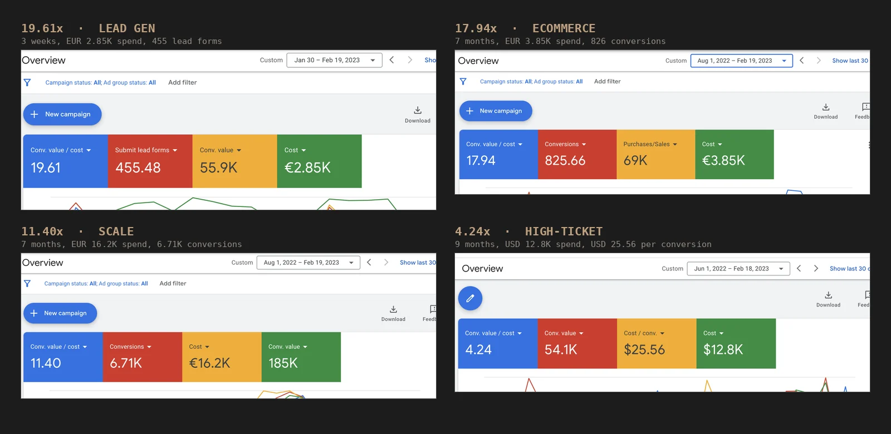
Google Ads2022–23
Four accounts, 4x to 19x return
Lead gen, ecommerce and high-ticket
19.61x on a lead-gen account pulling 455 form submissions in three weeks. 17.94x on an ecommerce account off €3.85K. 11.40x on a larger €16.2K account doing 6.71K conversions. 4.24x on a high-ticket account where a conversion costs $25.56 to buy.
The spread is the point. A 19x lead-gen account and a 4x high-ticket account are not the same job done well and badly, they are different economics. Cheap conversions with a long sales cycle need volume and lead quality scoring; expensive conversions need tight match types and a hard look at what a conversion is actually worth before bidding for it. Same platform, different levers.
4x – 19xreturn range
7.9K+conversions
4account types
Content2023–24
25%+ keyword ranking uplift
Client portfolio · Digitabytes
Question and keyword research in SEMrush, Ahrefs and Search Console to find the high-intent gaps, then meta titles, heading hierarchy, internal linking and image attributes reworked across the portfolio.
25%+average rankings
8+writers briefed
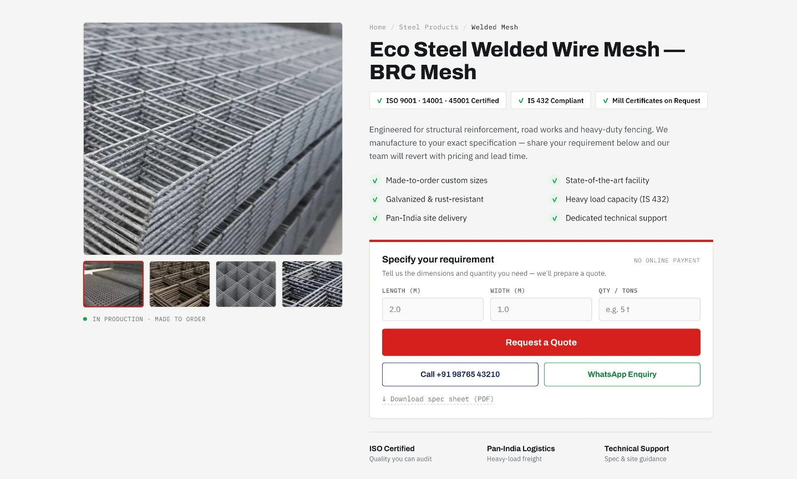
Web design2026
A B2B product page built to collect a spec, not a card number
Eco Steel · welded wire mesh manufacturing
Steel mesh is made to order, priced by tonnage and quoted per job, so a normal ecommerce template fights the business. The page keeps the product-detail shape a buyer already knows, meaning gallery, specification and trust row, then swaps the add-to-cart block for a three-field requirement form: length, width, tonnage. That is the minimum a sales team needs to price the job, and asking for less means a second email before anyone can quote.
Everything above the form is there to remove an objection before it is raised. ISO and IS 432 badges sit next to the title because a procurement officer checks compliance first, the benefit grid answers custom sizing and delivery reach, and “No online payment” is printed on the form itself so nobody hesitates over what the red button does. Call and WhatsApp sit under it for the buyers who will never fill in a form, and the spec sheet downloads without a gate.
Bookmarks placed the week a piece goes live, to get it crawled before it has any internal links pointing at it. Small effect, cheap to do, and it stops a new post sitting undiscovered for a fortnight.
The green deltas are the story here. ChatGPT went from nothing to 1.1K citations across 698 pages, Copilot from nothing to 604, Gemini from nothing to 298. Google AI Overviews added 2.6K on top of what was already there and Perplexity added 762. Four engines that were not naming this brand at all now do.
Six months of Search Console data: 66.4K clicks off 3.48M impressions, average CTR 1.9%, average position 27.3. The daily line opens around 200 clicks in March and finishes near 800 by September, with impressions climbing from roughly 10K to 40K a day over the same stretch.
Full technical audit first, then the architecture and indexation fixes, then a content plan built around the gaps competitors were already covering. Technical and content ran in parallel rather than one after the other, which is why impressions and clicks climb on the same curve instead of impressions spiking first and clicks lagging months behind. The average position of 27.3 is the honest part of this chart: the growth came from long-tail depth and page-two-to-page-one movement across a wide query set, not from a handful of head terms carrying everything.
300%organic traffic
66.4Kclicks in 6 months
3.48Mimpressions
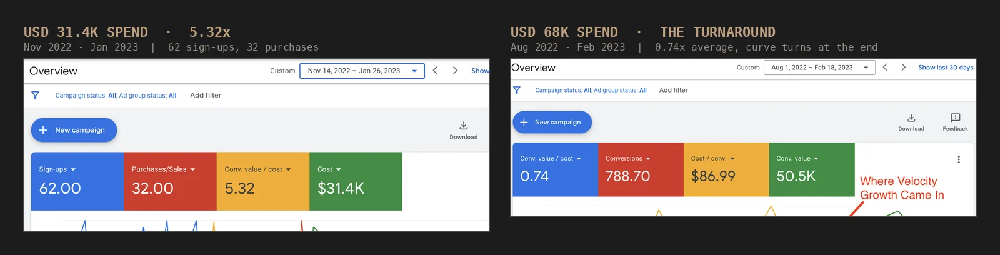
Google Ads2022–23
Bigger budgets, including one that was underwater
Client accounts · Google Ads
$31.4K over ten weeks at 5.32x, and a $68K account that averaged 0.74x across the period, meaning it spent more than it returned.
I have left the second one in because the average hides the story. Conversion value sits flat along the floor for most of the period and then climbs hard in the final stretch, which is where the restructure landed. An account like that does not get fixed by bid tweaks. It needs the conversion actions rebuilt so the platform is optimising toward revenue rather than form fills, the budget pulled off campaigns that were never going to pay back, and the wasted spend accepted as the cost of finding that out. Reporting a portfolio average of 11x while quietly dropping this one would be the dishonest version.
$99K+managed spend
5.32xon the larger account
0.74x → upturnaround in progress
Backlinks2021–26
Microblogging Submission
Short-form notes and curation pages
Short posts that carry one link each and nothing else. They exist to widen the referring-domain spread rather than to pass meaningful authority, and they are kept to a small share of the profile for that reason.
Google AI Overviews cite the site 5.6K times across 939 pages, ChatGPT 710 times across 488, Perplexity 674 across 241. The page spread matters more than the totals: this is not one lucky URL being quoted over and over, it is the catalogue getting picked up broadly, which is what a store actually needs. Gemini tracking was not live for this domain at the time of the snapshot. Backlink profile sits at DR 91 with 91.6K referring domains.
Render-blocking scripts, image handling, layout shift and unused CSS, site by site. I wrote the HTML, CSS and JavaScript fixes myself, so the work shipped in days instead of sitting in a developer queue.
30%+load improvement
20+sites
Backlinks2021–26
Link Syndication
Content pushed out to boards and collections
The same asset republished across collection platforms so one piece of content earns several referring domains. Padlet and Wakelet both index well and both keep the original link intact rather than wrapping it in a redirect.
788 ChatGPT citations against 43 in Google AI Overviews. That inversion is the useful part: the site wins where someone asks an assistant a question, not where Google summarises a results page, and those two need different work. Perplexity sits at 279 across 230 pages. Around it, 126K organic keywords, 2.8M monthly organic traffic worth roughly $599K, DR 88.
Visual assets hosted with the client link attached
Product and brand imagery uploaded with a description and a link back. Pinterest is the one that earns its place here, because pins keep sending referral traffic months after they go up while most image hosts go quiet within a week.
500px carries an 11 per cent spam score, so it stays a single placement rather than a channel.
2,294 citations in total, but the shape is unusual. ChatGPT pulls 1.3K of them from just seven pages and Perplexity takes 701 from a single page. A handful of articles are carrying the whole brand. Strong result, fragile setup, and the next job is widening the base so the site does not depend on one URL staying in favour. DR 90 with 700 referring domains.
Two graphics, both built around a question the client's audience already searches: whether an IIT route is worth it for a BSc undergrad, and a comparison of organic wheat flours. An infographic only earns links if the underlying data is worth citing, so the research came before the design.
Ahrefs AI citation tracking for the domain: 599 from Google AI Overviews, 111 Perplexity, 18 ChatGPT, 14 Copilot, 11 Gemini. The split matters more than the total. AI Overviews cite one page 599 times, while Gemini spreads 11 citations across seven pages, so a single page is carrying the brand in Google's answers. That is a result and a concentration risk in the same number, and the next job is making more pages answer-ready. Backlink profile sits at DR 91 with 575 referring domains.
A mathematics-in-data-science explainer and an organic wheat flour deck, hosted where the file itself indexes. SlideShare decks in particular hold rankings for long-tail queries that the client site never targeted.
SlideShare sits at a 16 per cent spam score, the highest in the profile, which is why it is one placement and not a programme.
Two hosted videos with the client link in the description. Modest on their own, and included here for completeness rather than because they moved anything.